<!--
    HEADER.HTML
    Not meant to be used as a standalone file.

    How to use: Put this html at the top of a page:
    <div ng-controller="header">
		<div ng-include="'Header.html'"></div>
    </div>
    
    File expects SiteStyle.css to be in effect.
-->

<md-toolbar id = "siteHeader">
    <div class="md-toolbar-tools">
        <md-button md-ink-ripple="#FFFFFF" class="icon" aria-label="Back" ng-click="back()">
            <md-tooltip>Back</md-tooltip>
            </img>
        </md-button>

        <div style="padding: 0px 2px;">&nbsp;</div>

        <h2 flex ng-truncate ng-show="loggedIn">Logged in as {{currentUsername}}</h2>
        <h2 flex ng-truncate ng-show="!loggedIn">Viewing sample data as Guest</h2>
        
        <md-button ng-show="!loggedIn" md-ink-ripple="#FFFFFF" class="icon" aria-label="About Demo Mode" ng-click="goTo('Demo.html')">
            <md-tooltip>About Demo Mode</md-tooltip>
            </img>
        </md-button>
        <md-button ng-show="loggedIn"  md-ink-ripple="#FFFFFF" class="icon" aria-label="Admin Settings" ng-click="goTo('Admin.html')">
            <md-tooltip>Admin Settings</md-tooltip>
            </img>
        </md-button>

        <div style="padding: 0px 2px;">&nbsp;</div>

        <md-button ng-show="!loggedIn" md-ink-ripple="#FFFFFF" class="icon" aria-label="Login" ng-click="login()">
            <md-tooltip>Login</md-tooltip>
            </img>
        </md-button>
        <md-button ng-show="loggedIn"  md-ink-ripple="#FFFFFF" class="icon" aria-label="Logout" ng-click="logout()">
            <md-tooltip>Logout</md-tooltip>
            </img>
        </md-button>
    </div>
</md-toolbar>